Takhle vypadal hokej v 90. letech
Střih a náhled videa pro YouTube kanál Deníku Hokeje. Archivní záběry, tempo a hudba poskládané do osmi a půl minuty.
- Střih
- Náhled
- YouTube
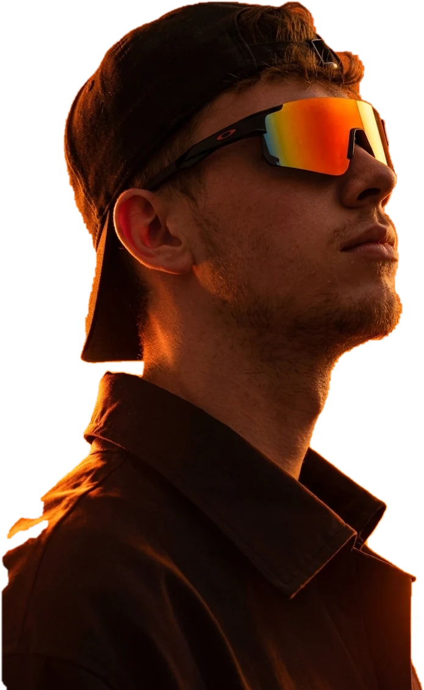
Design, který zaujme.
Nápady, které spojují.
Pracuji pro
Student multimediální komunikace, grafik, střihač, web developer a mladý podnikatel.

Vizuální identita značky, tvorba a úprava brandingu.
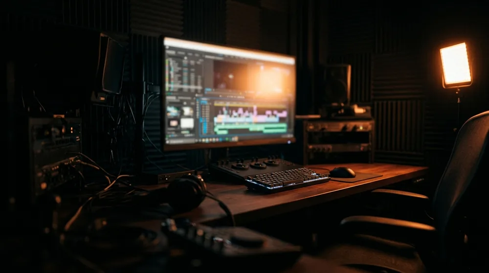
Střih, motion, produkce obsahu.

Frontend, backend, UX/UI.
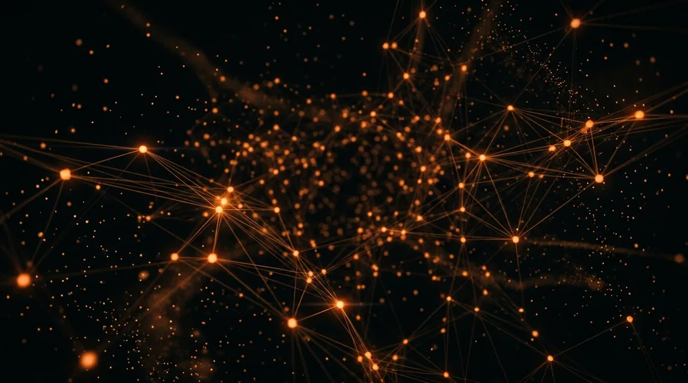
Automatizace a AI nástroje v praxi.
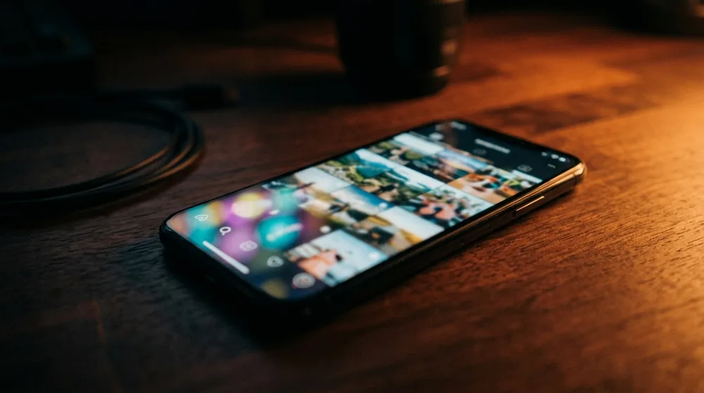
Social media a obsahová strategie.
Vlastní projekty a podnikání.
První krůčky v designu a tvorbě obsahu, experimenty, učení se a objevování kreativity.
Studium multimediální komunikace: design, video, média a technologie.
Grafika / sociální sítě / video / žurnalistika.
AI automatizace / weby / UX/UI / frontend / backend.
Značka / e-commerce / social media / content.
Pasivní systém na šetření času makléřům.

Portfolio
Hokejové médium, kde propojuji vizuální identitu s rychlým redakčním provozem. Vizuály musí být čitelné během vteřiny a fungovat napříč formáty.
Střih a náhled videa pro YouTube kanál Deníku Hokeje. Archivní záběry, tempo a hudba poskládané do osmi a půl minuty.
Carousel pro Instagram. Cesta napříč všemi MS, kde ČR a ČSSR získalo zlato, seřazená chronologicky. Deset snímků.
Úvodní slide
Scrolluj a carousel se otáčí. Kliknutím snímek zvětšíš.


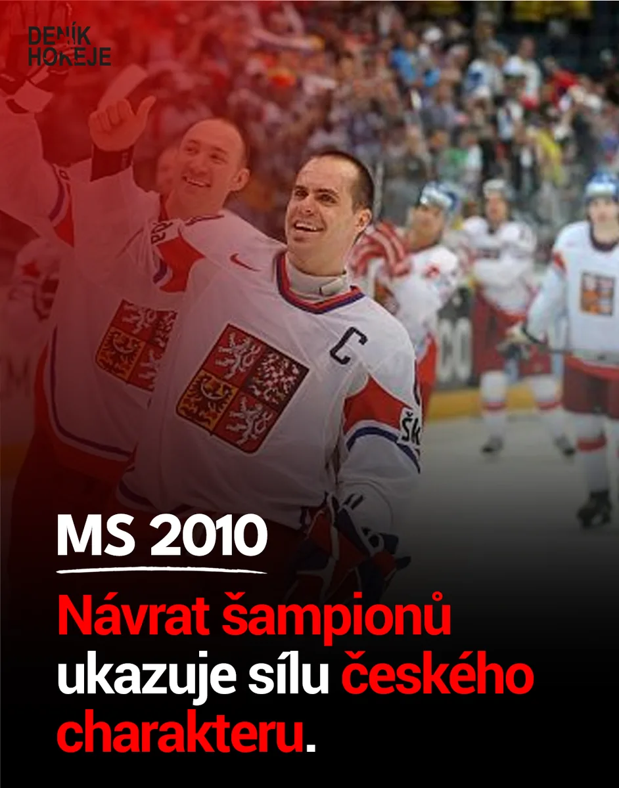

Carousel pro Instagram o sovětské pětce, která byla nejděsivější v historii hokeje. Pět snímků, tady rozestavených tak, jak pětka stála na ledě.
Najeď na hráče, klikni pro detail

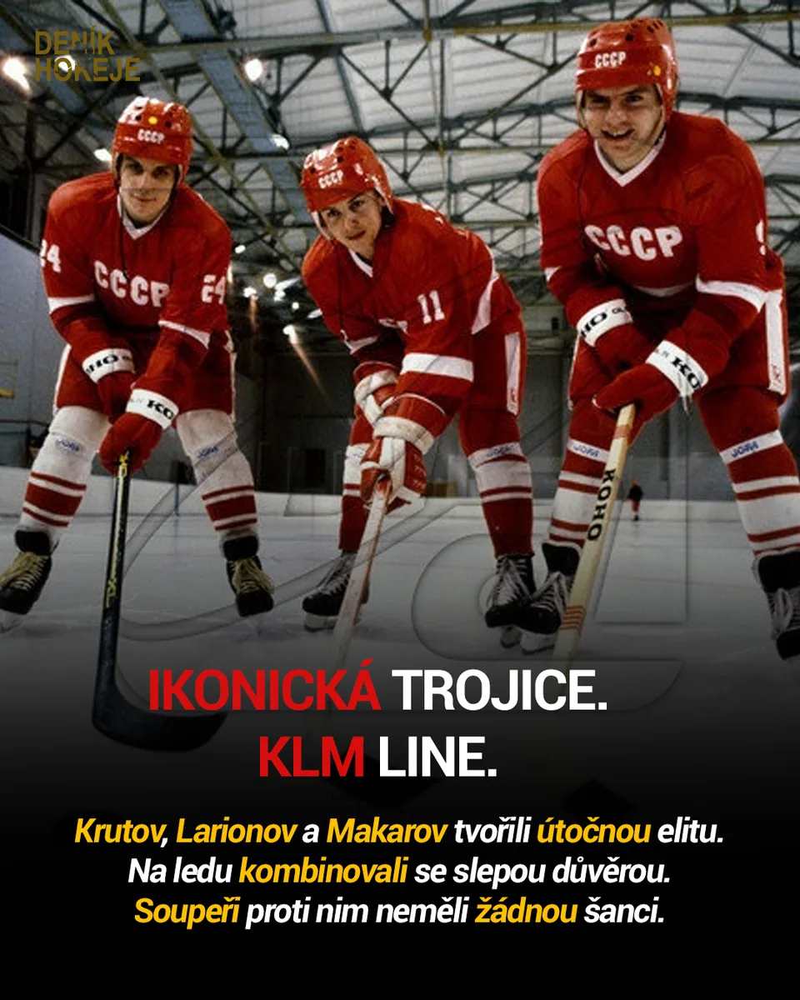

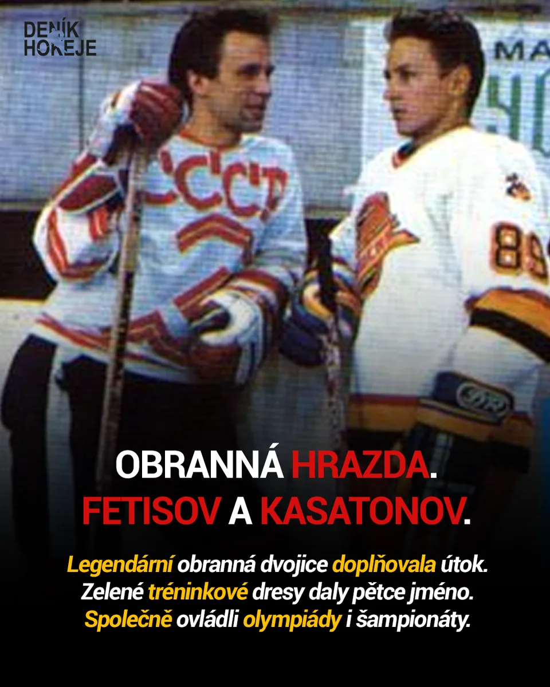
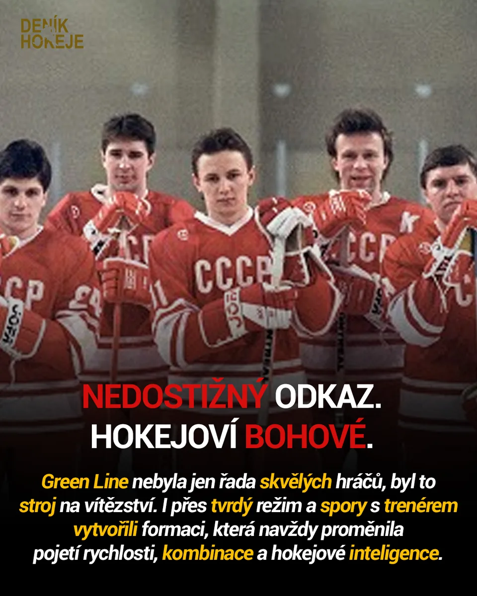
Náhledové grafiky pro videa na YouTube. Musí fungovat v malém i přes celou obrazovku. Vyzkoušej si to.
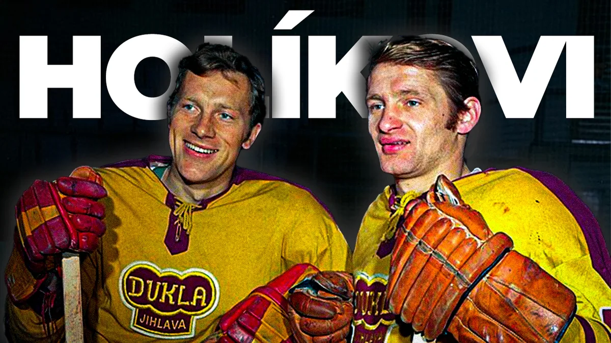
Přetři náhled a uvidíš fotku, ze které vznikl
Loga pro Boží kytky a BSK a logo videokanálu Deníku Hokeje v červené a černobílé variantě.
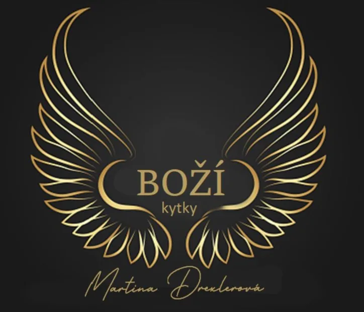
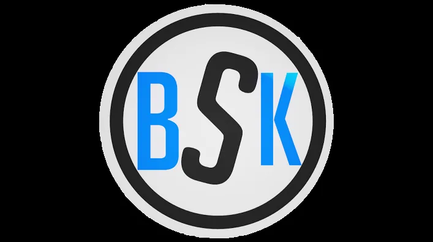
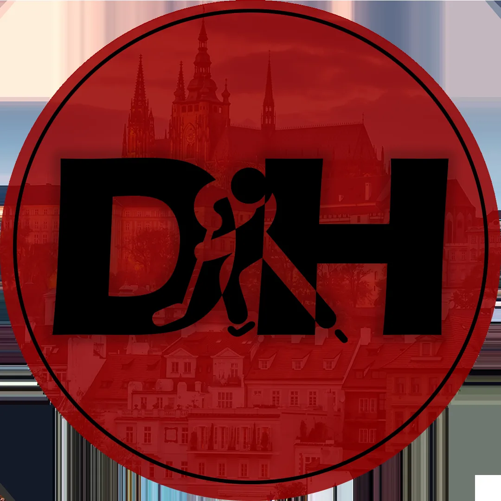
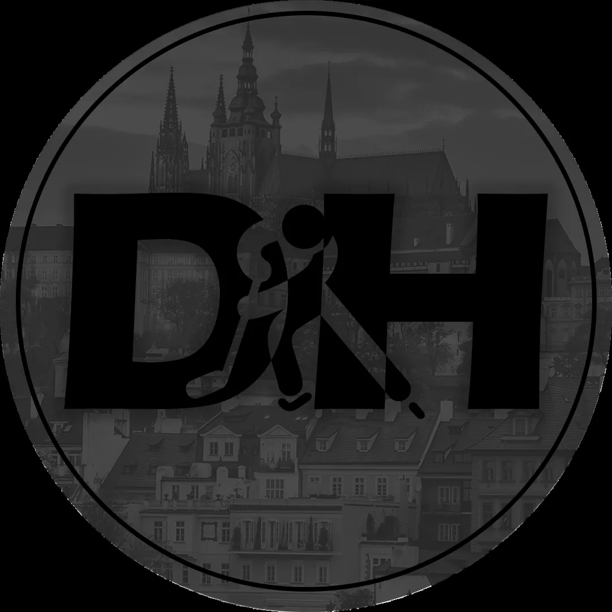
Odbavím celou zakázku od značky po hotový web. Bez předávání mezi třemi dodavateli.
Napište mi, co máte v hlavě. Ozvu se do dvou dnů a řekneme si, jestli vám s tím umím pomoct.